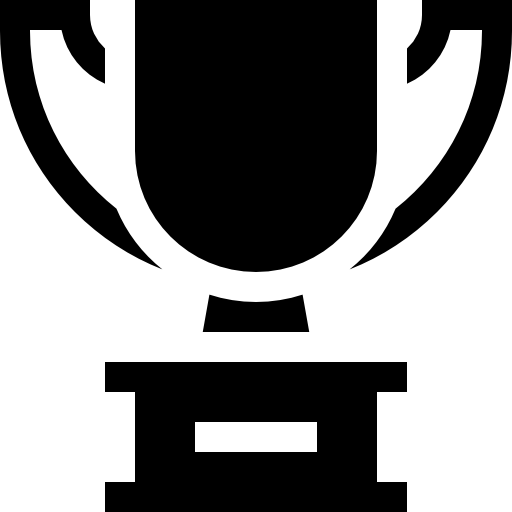

Esportes Japoneses
O Japão é um país que harmoniza perfeitamente esportes tradicionais com modalidades modernas, refletindo sua rica cultura e inovação. Entre os esportes tradicionais, o sumô é o mais icônico, considerado uma arte marcial sagrada com séculos de história. O judô e o kendô também têm raízes profundas, sendo praticados tanto como disciplinas físicas quanto filosóficas.
Sumô
O sumô é um esporte de luta tradicional do Japão, com séculos de história e profundas raízes culturais e religiosas. Mais do que uma competição física, o sumô envolve rituais xintoístas, como o lançamento de sal para purificar o ringue (dohyō), demonstrando a conexão entre o esporte e a espiritualidade japonesa. Os lutadores, chamados rikishi, seguem um rigoroso treinamento e uma dieta especial para atingir grande massa corporal e força. Cada combate é rápido e intenso, vencendo quem consegue empurrar o adversário para fora do círculo ou fazê-lo tocar o chão com qualquer parte do corpo que não os pés.
-  Torneios (basho): 6 por ano.
-
 Título: vencedores são os yokozuna.
Título: vencedores são os yokozuna.
Kendo
Originário do kenjutsu ou esgrima, a importante arte marcial dos samurais, os competidores usam equipamentos especiais de proteção e batem na cabeça, no peito ou nas mãos do oponente com uma espada de bambu. O objetivo é marcar golpe válidos em áreas específicas do adversário (cabeça, torso, punho e garganta) com precisão e espírito correto (ki-ken-tai-ichi). Além da técnica, o Kendo busca o desenvolvimento do caráter, disciplina e respeito (reiho).
-
 Campeonato: há competição mundial.
Campeonato: há competição mundial.
-
Equipamento: Shinai (espada de bambu), bōgu (armadura) e hakama (vestimenta tradicional).
Judô
O judô, que significa "caminho suave", é uma arte marcial japonesa criada por Jigoro Kano em 1882. Surgiu como uma evolução do jujutsu tradicional, com foco em técnicas de projeção, imobilização e disciplina mental. No Japão, o judô não é apenas um esporte, mas também uma filosofia que valoriza respeito, autocontrole e desenvolvimento pessoal. Combinando tradição e competição, o judô no Japão continua a inspirar gerações, mantendo vivos os princípios de harmonia e eficácia que definem essa arte marcial.
-
Ouro: 3 em Paris 24.
- Prata: 2 em Paris 24.
-
 Bronze: 3 em Paris 24.
Bronze: 3 em Paris 24.